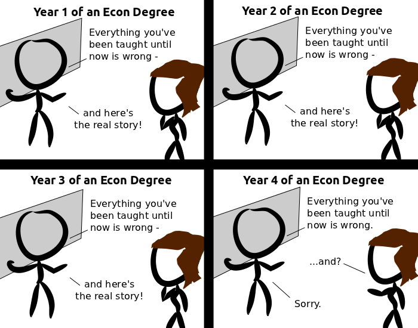

Comic JK 729
When I Feel Like It
⇤
<
?
>
⇥

⇤
<
?
>
⇥
Forum
.
RSS
.
Digg
.
Facebook
.
Reddit
.
Twitter
.
Stumbleupon
Enter your thoughts on number 729 here. Please, no spamming, trolling, phreaking, or economic forecasts. Funny but the stuff really does work if the government would stop intervening and just let the system work out its problems on it's own. We can not afford their "help". > The ultimate result is that ConglomoCorp becomes indistinguishable from government. Ha, my one semester of econ now makes sense. Impossible. After year 1, year 2 makes no sense, as they were taught that what they have been taught is wrong. Multiple choice: 2+2=? a) five b) none of the above c) none of the before d) none of the before e) none of the before. Answer cannot possibly be c, d, or f. > "Everything until now" is not the same value over the panels, there is no paradox. Anyway, statements made in a self-referential metalanguage aren't necessarily true or false, they can be inconsistent too. >>I think what the first guy is including the "everything you've been taught until now" as part of the teachings that are declared to be wrong later. If those are wrong, then some of the stuff taught before them was right, so not everything taught before them is wrong. Unfortunately for his argument, however, the statement includes "and here's the real story" as part of the same statement, so it's entirely possible for all the previous teachings to be wrong: 2 + 2 = a) 5 b) none of the above and 6, c) none of the above and 7, d) none of the above Economists are some of the few people that don't understand economy. >I'm assuming that by "few" you mean "many". Everything below this line is wrong. >FFFFFFFFFFFFFFFFUUUUUUUUUUUUU Everything above this line is wrong. Everything above this line is correct. Everything above this line is wrong. Everything above this line is wrong. Everything above this line is wrong. I don't have time to see if that's a paradox or not. >It sure is, the second line denies the first, but also implies the same as the first line on everything above the first line. And so on for the third and fourth lines. >> Maybe it’s not the meaning that’s wrong. >>This statement is false. >>>No it isn't. >>>>Does a set of all sets contain itself? >>>>>Does Set Theory allow for a set to refer to itself? Idontknow. >>>>>Of course. More importantly, does the set of all sets that don't contain themselves contain itself? Actually, it isn't a paradox. Year 1. Teacher says (NOT A) & B Year 2. Teacher says (NOT ((NOT A) & B) & C) Year 3. Teacher says (NOT (NOT ((NOT A) & B) & C) & D) Year 2 can still be true if you have (NOT A) & (NOT B), and so-forth. I'm still trying to see how two physicians fit into the economics discussion... I'm still trying to fit two dicks in your mother's ass